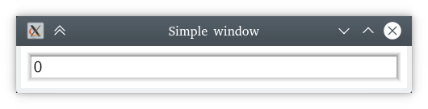

KAS Tutorials
These tutorials concern the KAS GUI system. See also the KAS examples and 7GUIs examples.
Further reading can be found on the KAS blog.
Please ask questions on the discussion boards or on the tutorials issue tracker.
Requirements
It is assumed that you are already familiar with the Rust language. If not, then Learn Rust!
It is also assumed that you have basic familiarity with git and basic command line tools, though these aren't a significant topic of the tutorials.
We suggest using the latest stable Rust toolchain (or at least, a recent one) — Install Rust. Tutorials should use the latest stable release of KAS, and KAS often uses newly-stabilised Rust features. You can probably use beta or nightly Rust instead, if preferred.
Code samples are formatted using rustfmt.
Examples
All significant examples can be found as working apps in the example directory.
Licence
This tutorial, including text but excluding code samples, is licensed under CC BY-SA 4.0


Code samples found within this tutorial are marked with CC0 1.0

Simple window

Lets start by building a really simple UI, containing just an edit-box. (This is basically just a template. Source.)
use kas::widget::{EditBox, Window}; fn main() -> Result<(), kas_wgpu::Error> { env_logger::init(); let content = EditBox::new("0"); let window = Window::new("Simple window", content); let theme = kas_theme::ShadedTheme::new(); kas_wgpu::Toolkit::new(theme)?.with(window)?.run() }
Hopefully that is clear enough? Let me explain anyway:
- our
mainfunction may fail with thekas_wgpu::Errortype;Toolkit::newandToolkit::withcan fail (the?"try" operator) - we initialise a logger,
env_logger(optional, but lets us get useful messages; try setting the environment variableRUST_LOG=kas=infoortracebefore running the example) - we construct an
EditBoxand aWindowaround that - we use the
ShadedTheme(with default colours) - we initialise the toolkit with our theme, add our window, and run it
Note that Toolkit::run does not return. It is in fact a wrapper around
winit::event_loop::EventLoop::run, which does not return.
By default, the program will exit after all windows have closed.
Also note that we only import our widgets into the module (use kas::widget::{..}),
but don't import anything from the other crates: we use env_logger::init,
kas_theme::ShadedTheme and kas_wgpu::Toolkit directly since we don't need
any other items from these crates.
Counter

This tutorial follows on from simple window, turning the example into a counter.
To do this we simply add a button... or not quite so simply, since:
- a button must send a message
- messages must be handled
- placing multiple widgets next to each other requires a layout widget, which in this case also serves as our message handler
I'll just give you our next code sample, then talk about it (source):
use kas::class::HasString; use kas::event::{Manager, Response, VoidMsg}; use kas::macros::make_widget; use kas::widget::{EditBox, TextButton, Window}; fn main() -> Result<(), kas_wgpu::Error> { env_logger::init(); let content = make_widget! { #[layout(column)] #[handler(msg = VoidMsg)] struct { #[widget] display: impl HasString = EditBox::new("0").editable(false), #[widget(handler = count)] _ = TextButton::new("count", ()), counter: u32 = 0, } impl { fn count(&mut self, mgr: &mut Manager, _: ()) -> Response<VoidMsg> { self.counter += 1; *mgr += self.display.set_string(self.counter.to_string()); Response::None } } }; let window = Window::new("Counter", content); let theme = kas_theme::ShadedTheme::new(); kas_wgpu::Toolkit::new(theme)?.with(window)?.run() }
Whoah... a lot just happened there right? Lets start with the little things:
- we set
.editable(false)on ourEditBoxsince it is for display only - we construct a button:
TextButton::new("count", ())
Wait, what's that () doing there? That is our message. When the button is
clicked, it sends a message to its parent widget, which calls count...
A handler
The count method is a handler:
#![allow(unused)] fn main() { fn count(&mut self, mgr: &mut Manager, _: ()) -> Response<VoidMsg> { self.counter += 1; *mgr += self.display.set_string(self.counter.to_string()); Response::None } }
Perfectly ordinary method here. Its parameters are &mut self (the widget
doing the handling), mgr: &mut Manager (the "event manager"), and _: ()
(the message our button passed, which we ignore here).
Fields
The first line of count is: self.counter += 1;. Our method is implemented on our layout
widget, which has a simple field (counter: u32) intialised to zero (= 0),
so we can just increment it.
(Okay, I might have to explain why the struct has no name and counter: u32 = 0
all appears in one line — in a minute!)
Back to count, the second line calls self.display.set_string(..). As we saw,
display is also a field (display: impl HasString = ...), even though it is
also a widget. We know this widget implements
HasString, so we can call set_string on display to update its text.
Actions
Now, set_string returns a TkAction.
If we ignore it, we see the following when compiling the example:
warning: unused `TkAction` that must be used
--> src/main.rs:20:17
|
20 | self.display.set_string(self.counter.to_string());
| ^^^^^^^^^^^^^^^^^^^^^^^^^^^^^^^^^^^^^^^^^^^^^^^^^^
|
= note: `#[warn(unused_must_use)]` on by default
In this case, TkAction is telling us that we need to redraw (since the text
changed). It just so happens that the UI will be redrawn anyway (since the
button was just clicked), but it's good practice to handle actions. The easiest
way to do that is with *mgr += action (in KAS 0.7 this will become
*mgr |= action). Alternatively we could use Manager::send_action.
Messages
Finally, count returns Response::None. Every handler and every
widget's handler returns Response
(which is a bit like Option, but with None / Msg / Unhandled / ... variants).
Response is parametrised with a type called the message type — here we have
Response<VoidMsg>.
VoidMsg is a special
message type which cannot exist. Yes, you read that right: it cannot exist.
This is distinct from () which is a valid type with no data (Option<()> can
be None or Some(())). Option<VoidMsg> is a valid type, but it must be
None since Some(VoidMsg) is not valid. In fact, VoidMsg is just an enum without
any variants: enum VoidMsg {}.
Our button returned Response::Msg(()) when clicked, which we caught here.
count itself doesn't need to send a message to its parent, so we just return
Response::None.
make_widget
Okay, but what was all that weird syntax about?
Quite simply: make_widget is a macro. Macros are allowed to invent syntax.
There isn't really a good way to document macros, but I tried:
kas::macros. Lets just go over what we have here though.
First, we have some attributes:
#![allow(unused)] fn main() { #[layout(column)] #[handler(msg = VoidMsg)] }
make_widget only builds one kind of widget: a "parent" containing some number
of child widgets. layout(column) places those children in a column (there's also
single, row and grid which we'll see later).
As mentioned above, every widget's event handler returns Response<M> with
some type M, the message type. Here we configure the handler with message
type VoidMsg.
Aside: VoidMsg could and should be the default if not specified here, but
using the wrong type currently results in very poor error messages. For this
reason we currently require the message type be given explicitly instead of
assuming a default.
#![allow(unused)] fn main() { struct { #[widget] display: impl HasString = EditBox::new("0").editable(false), #[widget(handler = count)] _ = TextButton::new("count", ()), counter: u32 = 0, } }
Widgets are, like most complex types, structs. This one doesn't have a name: it is anonymous. Some languages have built-in support for anonymous types, but Rust doesn't (at least so far), so we invent some syntax.
Anonymous structs cannot be referred to later, hence they must be constructed
immediately. For this reason we specify each field's type and value at the same
time: counter: u32 = 0...
... except that we don't need to specify a type if it can be inferred, so we
could instead write counter = 0u32...
... and we don't even need to specify a name for fields we don't need to refer
to later, hence _ = TextButton::new(..) only has a value.
One other oddity: display has a bound impl HasString instead of a type.
We could just leave the type unnamed, except that, due to limitations of our
improvised support for anonymous types, when we refer to self.display later,
Rust cannot access this field if we do not specify a type. We could just specify
the type EditBox here (in KAS ≥ 0.7). Instead we just specify a bound:
i.e. the field has some type T: HasString.
#[widget] attribute
The field display is a widget. We could simply declare it without the #[widget]
attribute, but the widget would not be initialised, would not have space allocated,
be drawn, or receive events. This attribute integrates the new widget in its
parent. (Note that it is not a stand-alone attribute but must be used within
make_widget! or derive(Widget).)
The text button's attribute has a parameter: handler = count. As mentioned
above, TextButton can return a () message, and messages must be handled.
This binds the method count as our handler. (Note that if our layout widget had
message type () or any type which () can be converted into, we wouldn't have
to specify a handler here — but then we would need another parent around this
widget, since the Window widget's child must have message type VoidMsg.)
methods
Just because our widget is an anonymous struct doesn't mean it can't have methods. We just specify an impl block — but of course, without a name!
#![allow(unused)] fn main() { impl { fn count(&mut self, mgr: &mut Manager, _: ()) -> Response<VoidMsg> { .. } } }
Errata
Our layout widget is just a struct with some auto-generated names, plus type
parameters for untyped fields, and trait implementations.
#[derive(Debug, kas::macros::Widget)] is implied. Two extra fields are added:
core and layout_data. derive(Widget) is itself a complex macro, and does
the rest. Read more in the kas::macros documentation.